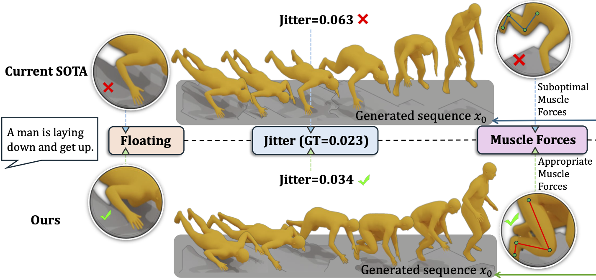

|
Xinghan Wang 王星瀚
I am a Ph.D. candidate at Wangxuan Institute of Computer Technology in Peking University, advised by Prof. Yadong Mu. Prior to that, I received my B.S. degree (Summa Cum Laude) in artificial intelligence (Turing Class) from Peking University.
Email /
Scholar /
Github
|
|
Research
My research interests lie in human motion analysis, temporal modeling and multi-modal learning.
|
|

|
BioMoDiffuse: Physics-Guided Biomechanical Diffusion for Controllable and Authentic Human Motion Synthesis
Zixi Kang, Xinghan Wang, Yadong Mu
arXiv, 2025
paper /
bibtex
A novel biomechanics-aware diffusion framework seamlessly integrating musculoskeletal dynamics with diffusion processes for authentic human motion generation.
|
|
|
Text-controlled Motion Mamba: Text-Instructed Temporal Grounding of Human Motion
Xinghan Wang, Zixi Kang, Yadong Mu
arXiv, 2024
paper /
bibtex
We introduce the text-based human motion grounding task, along with a new text-motion dataset with temporal and textual annotations. A model called TM-Mamba is proposed which can selectively propagates information using a text-controlled mechanism within the Mamba framework.
|
|
|
Localized Linear Temporal Dynamics for Self-supervised Skeleton Action Recognition
Xinghan Wang, Yadong Mu
IEEE Transactions on Multimedia, 2024
paper /
bibtex
A temporal contrastive learning framework for self-supervised skeleton action recognition that leverages segment-level localized linear dynamics to acquire discriminative temporal evolution patterns.
|
|
|
Neural Koopman pooling: Control-inspired Temporal Dynamics Encoding for Skeleton-based Action Recognition
Xinghan Wang, Xin Xu, Yadong Mu
CVPR, 2023
paper /
code /
bibtex
A novel parameterized high-order temporal pooling method based on Koopman theory for skeleton action recognition.
|
|
|
Learning Temporal Co-attention Models for Unsupervised Video Action Localization
Guoqiang Gong, Xinghan Wang, Yadong Mu, Qi Tian
CVPR, 2020
paper /
code /
bibtex
A fully unsupervised framework for video action localization based on temporal co-attention, clustering and iterative optimization.
|
Education
-
Ph.D. candidate, School of Intelligence Science and Technology,
Peking University
2021 - present
-
B.S., School of Electronics Engineering and Computer Science,
Peking University
2017 - 2021
|
Academic Services
- Reviewer for the following conferences: NeurIPS 2022-24, ACM MM 2022-23, ICCV 2023, ICML 2024, ICLR 2024-25, ECCV 2024, AAAI 2025, CVPR 2025.
- Reviewer for the following journals: Transactions on Multimedia (TMM), Transactions on Pattern Analysis and Machine Intelligence (TPAMI).
|
|
{kind=link}